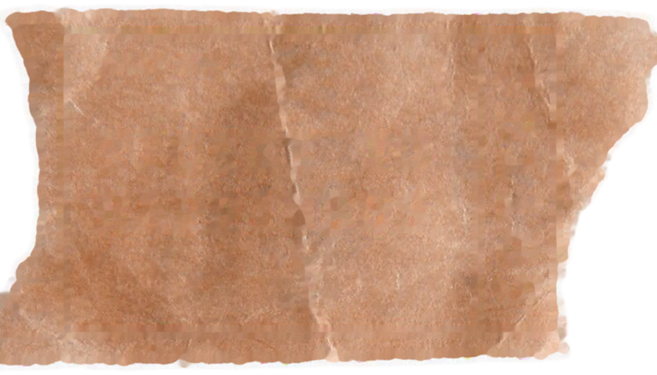
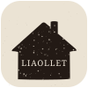

감정의 다락방 V2 시안
V.2 문서의 수정사항과 지난 디자인 점검 내용을 합쳐 화면 10장으로 만든 예시입니다. 폰 화면은 실제로 눌러 볼 수 있습니다. 감정 칸, 동의 도장, 감각 카드, 공감 버튼이 움직입니다. 확정되면 이 시안을 기준으로 앱 코드를 한 번에 고칩니다.
1 입장
다이어리가 서가의 창 역할을 합니다.
- V.2다이어리 오른쪽 장에 서가의 실제 결과물이 끼워져 있고, 다이어리 고리를 축으로 종이가 한 장씩 왼쪽으로 넘어갑니다. 넘어가는 동안 종이 면에 그늘이 지고, 고리가 종이 위로 보여서 고리에 걸려 도는 것처럼 보입니다. "페이지 넘김"과 "서가 결과물 반영"을 하나로 합쳤습니다.
- V.2"이미 받은 번호가 있나요?"를 누르면 그 자리에서 입력칸이 열리지 않고, 티켓 모양의 찾기 화면(3)으로 넘어갑니다.
- 점검손 사진 아래를 배경 어둠에 녹였습니다. 수평으로 잘린 손목이 보이지 않습니다.
- 점검메인 버튼을 티켓 화면과 같은 크림색으로 채웠습니다.
"THE ATTIC OF FEELINGS" 줄은 V.2 시안에 그대로 있어서 남겨 두었습니다. 뺄지는 아래 "정할 것"에 적었습니다.
LIAOLLET

ADMIT ONE
TICKET TO
YOUR FEELING
LIAOLLET CREATIVE EDITION
2026.10.21 · 오늘 1번째 창작자
이 번호로 언제든 작품을 다시 펼칠 수 있어요.
2 티켓 발급
관객을 손님이 아닌 창작자로 부릅니다.
- V.2"오늘 1번째 손님"을 "오늘 1번째 창작자"로 바꿨습니다.
- V.2고유번호를 따로 한 줄로 보여 주고 복사 버튼을 붙였습니다. 눌러 보면 실제로 복사됩니다.
- 점검도장을 오른쪽 위 빈 종이 자리로 옮겨 제목과 하단 문구를 덮지 않게 했습니다. "다락방으로 들어가기"를 눌러 보세요.
LIAOLLET
ADMIT AGAIN
YOUR TICKET NO.
______
LIAOLLET CREATIVE EDITION
받았던 티켓의 여섯 자리를 적어 주세요
3 번호로 다시 찾기
처음 받은 티켓과 같은 종이 위에 번호를 적습니다.
- V.2번호 찾기를 별도 티켓 화면으로 옮겼습니다. 1장에서 받았던 티켓과 같은 모양이라 무엇을 넣어야 하는지 바로 보입니다.
- V.2번호가 맞으면 그 티켓의 작품(콜라주, 감정, 글귀, 날짜, 감각)이 바로 펼쳐집니다. 거기서 서가로 가거나 공유 링크를 복사할 수 있습니다.
- 점검예시 번호가 입력값처럼 보이던 문제를 고쳤습니다. 빈 칸은 흐린 0으로만 표시합니다.
티켓 아래 여섯 칸 줄에 번호를 적으면 위 티켓에 타자기 글씨로 찍힙니다. 시안에서는 102101, 100301, 100502가 열립니다.
4 입장 동의서
줄을 걷어 내고, 동의는 도장으로 마무리합니다.
- V.2종이의 줄눈을 없앴습니다. 글자와 줄이 겹치지 않습니다.
- V.2세 문장을 V.2 문서의 문구로 바꿨습니다. 둘째 항목은 굵은 한 줄과 작은 안내로 나눴습니다.
- V.2"확인 날인"을 1장 도장처럼 영문 원형 도장(LIAOLLET / AGREED / 날짜)으로 바꿨습니다.
- 점검"[필수]" 반복과 점선 구분선을 지웠습니다. 체크는 펜으로 긋는 표시로 바꿨습니다.
5 오늘의 마음
칸으로 돌아가고, 고를 때 잉크가 번집니다.
- V.2감정을 다시 칸으로 되돌렸습니다. 지난번 시험 적용(펜 동그라미 낱말)은 V.2 기준으로 걷어 냅니다.
- V.2칸을 누르면 가운데서 검은 잉크가 천천히 번져 칸을 채웁니다. 동그라미 방식이 더 낫다면 바꿀 수 있습니다.
- V.2"직접 쓰기"를 칸이 아니라 아래 별도 입력칸으로 뺐습니다. 감정을 고르면 그 감정의 한 줄("닿지 않는 곳에 마음이 가 있어요")이 입력칸 안에 옅게 떠서, 그대로 두거나 고쳐 쓸 수 있습니다.
- 점검폰에서 누른 칸이 떠 보이던 hover 문제가 없습니다.
6 시선 고르기
카드마다 그 사람을 상징하는 이미지가 들어갑니다.
- V.2LIA·OL·LET 카드에 V.2 시안의 인물 이미지를 넣었습니다.
- V.2각 인물의 소개를 한 줄로 정리했습니다. 외모 묘사 대신 무엇을 만드는 사람인지를 적었습니다.
- V.2아티스트 색을 V.2 시안대로 바꿨습니다. LIA 적갈색, OL 짙은 초록, LET 주황빛 빨강입니다.
- 점검카드의 주인공을 이름이 아니라 질문으로 바꿨습니다. 질문이 가장 크게 보입니다.
- 점검선택해도 카드가 기울지 않습니다. 그 사람의 색 테두리만 둘러집니다.
남겨진 문장들 사이의 고요함
윤곽과 실루엣만 남기고, 진실한 단어만 남기는 시선입니다.
작품에는 세피아 톤, 여백, 윤곽과 실루엣 중심의 배치가 적용됩니다.
이 시선으로 계속하기7 시선 상세
고른 사람의 색으로 화면 전체가 바뀝니다. 6장에서 카드를 누르거나 아래에서 골라 보세요.
- V.2V.2 시안의 상세 화면을 LIA·OL·LET 세 사람 모두 폰 크기로 옮겼습니다. LIA는 따뜻한 적갈색 "남겨진 문장들 사이의 고요함", OL은 짙은 초록 "찢어진 틈새로 스며드는 빛", LET은 주황빛 빨강 "겹겹이 쌓인 경험의 오버레이"입니다.
- 점검아티스트별 색과 질감이 콜라주뿐 아니라 화면에도 이어집니다. 말투는 바꾸지 않습니다(디자인 결정 8번).
8 질문에 답하기
오늘의 마음 → 사진 → 오늘의 이야기(다락방이 읽어 낸 이야기 + 내가 더 쓴 이야기, 한 칸) → 태그 순서입니다.
- V.2쓸 것을 줄였습니다. "원하는 이미지에 대한 요청" 칸과 "해시태그 읽어내기" 버튼을 없앴습니다.
- V.2사진을 다 올린 뒤 누르는 완료 버튼을 크라프트지 짐표(꼬리표) 모양으로 두었습니다. 펀치 구멍과 바늘땀 테두리, 타자기 글자 ATTIC NOTE에 손글씨로 "다 올렸어요, 이야기를 적어 주세요"가 적혀 있고, 누르면 다락방이 읽은 뒤 꼬리표가 천천히 접혀 사라지고, 아래 오늘의 이야기 칸이 그 자리로 올라와 이야기가 천천히 배어 나옵니다. 움직임은 모두 2.8~3초에 걸쳐 차분하게 흐릅니다. 이 꼬리표를 누를 때만 LLM을 부릅니다.
- V.2다락방의 이야기와 더 적고 싶은 이야기를 한 칸으로 합쳤습니다. "다락방이 읽어 낸 이야기 보기" 버튼을 누르면 LLM이 마음과 사진을 읽고 2~3문장을 그 칸에 적어 줍니다. 그 아래 안내 문구대로 이어 쓰거나 고칠 수 있고, 버튼 없이 처음부터 직접 적어도 됩니다. LLM은 버튼을 누를 때만 부르기 때문에 비용도 줄어듭니다.
- V.21번이 고른 마음("오늘의 마음 그리움")을 짚고, 그 마음에 맞춘 질문("그리운 것이 남아 있는 사진이 있나요?")을 띄웁니다. 질문은 감정 12개마다 따로 있고, 직접 쓴 감정이면 "OO이 머문 장면이 있나요?"로 묻습니다. 그다음, 사진을 올리면 LLM이 마음과 사진을 함께 읽어 다이어리 이야기 한 편(2~3문장)을 적습니다. 탭과 "다른 이야기 보기"는 없앴습니다. 맨 아래 태그는 시선(#LIA) → 오늘의 마음(#그리움) → 사진 태그 → 글 내용 태그 순서이고, 글 내용 태그는 쓰는 대로 바뀝니다.
- V.2다락방이 읽어 낸 말은 LLM이 사진과 오늘의 마음을 더해 2~3문장의 다이어리 이야기로 적어 줍니다. 세 편을 한 번에 받아 두고 "다른 이야기 보기"로 돌려 봅니다. 그 아래 칸은 "더 적고 싶은 이야기가 있나요?"로 바꿔, 비워 두어도 되는 덧붙임 칸이 되었습니다. 작품에는 덧붙인 이야기가 있으면 그것이, 없으면 다락방의 이야기가 새겨집니다.
- V.2다락방이 읽어 낸 말을 두 갈래로 나눴습니다. "사진을 비춰 보기"는 사진에 보이는 것을, "마음을 펼쳐 보기"는 앞에서 고른 오늘의 마음과 시선을 읽습니다. 탭마다 한 줄 풀이와 예시 문장이 따로 나오고, LLM은 한 번만 불러 두 갈래를 함께 받습니다. 해시태그는 맨 아래로 내려 문장을 쓰는 대로 바뀌게 했고, 마지막 결과 화면에서 모두 종합한 주요 낱말로 다시 정리됩니다.
- V.2시작 낱말 테이프를 없앴습니다. 사진을 먼저 올리면 다락방(LLM)이 사진을 읽고 키워드와 예시 문장 두 줄을 띄웁니다. 예시는 매번 무작위로 바뀌고 "다른 문장 보기"로 다시 뽑을 수 있습니다. 눌러서 아래 답 칸으로 옮겨 고쳐 써도 되고, 직접 적어도 됩니다.
- V.2읽어 내기는 버튼 없이 사진을 올리면 자동으로 시작합니다. LLM이 실패하면 오늘의 마음에 맞춘 키워드와 예시 문장으로 채웁니다.
- V.2위에 앞에서 고른 오늘의 마음과 시선을 보여 줍니다. "감각"이라는 말은 화면 전체에서 "시선"으로 바꿨습니다. 버튼 "감각 엮기"만 V.2 문서 문구라 남겨 두었습니다.
- V.2"콜라주 엮기"를 "감각 엮기"로 바꿨습니다.
- 점검답 칸의 줄을 글줄 높이에 맞춰 글자가 줄 위에 앉습니다. 사진은 폴라로이드처럼, 태그는 종이 라벨로 바꿨습니다. 종이 색도 LIA 쪽으로 물들었습니다.
당신의 LIAOLLET
LIA의 시선으로 엮은 한 장
이 번호로 언제든 다시 펼칠 수 있어요. 작품에도 새겨져 있습니다.
FROM THE DIARY OF
2026. 10. 21 · LIAOLLET
실명 대신 별명이나 이니셜로 서명해 주세요
To. 새벽 님께
부치지 못한 편지
창가로 든 오후의 빛이 책장 위에 오래 머물렀다. 부치지 못한 편지처럼, 그 빛을 접어 서랍에 넣어 두고 싶다. 그날 끝내 이름을 부르지 못했다.
부르지 못한 이름이 창가의 빛에 머물러, 리아의 여백 속에 한 장으로 남았습니다.
그리움 · LIA의 시선 · 2026. 10. 21
from. 감정의 다락방
9 당신의 LIAOLLET
작품이 주인공이고, 티켓은 반쪽만 남깁니다.
- V.2편지를 짧게 줄였습니다. To. → 제목 → 오늘의 이야기(인용) → 관계 한 문장 → 낱말 셋과 "마음 · 시선 · 날짜". 이야기에 이미 있는 장면을 다시 적던 여는 말과, 관계를 되풀이하던 맺음말을 지웠습니다. 한 내용은 한 번만 나옵니다.
- V.2"이렇게 엮였습니다"와 작품 라벨을 하나로 합쳐 다락방이 보내는 편지 한 장으로 만들었습니다. To. 서명 → 작품 제목 → 오늘 고른 마음과 시선, 사진에서 본 것(여는 말) → 오늘의 이야기(인용) → 그것이 어떻게 이어졌고 시선이 무엇을 남겼는지(본문) → 종합 낱말과 날짜, from. 감정의 다락방. 중복되던 시선·재료·날짜 칸과 노트의 첫 문장은 지웠습니다.
- V.2오늘의 이야기를 고치거나 덧붙인 글은 작품에 새기기 전에 LLM이 맞춤법, 띄어쓰기, 문장 부호만 바로잡습니다. 낱말, 어순, 말투는 그대로 둡니다. 고친 글은 칸에도 돌려놓아 무엇이 새겨지는지 보입니다(따로 알림 문구는 두지 않습니다). LLM이 없을 때는 겹친 띄어쓰기, 문장 부호 앞뒤 빈칸처럼 뜻을 건드리지 않는 것만 고칩니다.
- V.2앞에서 고른 것들이 끊기지 않고 이어집니다. 오늘의 마음(3장) → 시선(5장) → 사진에서 읽은 키워드 → 나의 문장(8장)을 모두 LLM에 넘기고, LLM이 문장이 사진 속 어떤 이미지를 붙잡아 그 마음으로 이었는지를 한 문장(관계)으로 씁니다. 결과 화면의 "이렇게 엮였습니다"에 그 흐름과 관계 문장이 나오고, 제목·재료·노트도 이 관계에서 나옵니다. 콜라주에는 고른 키워드와 나의 문장이 새겨집니다.
- V.2창작 에디션 티켓 상자를 작은 티켓 반쪽으로 줄였습니다. 1장에서 받은 티켓 종이를 그대로 씁니다.
- V.2"그리움"이 세 번 반복되지 않게 했습니다. 제목 줄에서 빼고, 작품 안에만 남깁니다(코드에서는 작품 태그에서도 감정 태그를 뺍니다).
- V.2"함께 찍혀 있습니다"를 "새겨져 있습니다"로 바꿨습니다.
- V.2공유 링크 복사를 넣었습니다. 실제 링크는 서버와 DB가 붙어야 작동합니다.
- V.2큐레이터 노트를 미술관 작품 라벨 형식으로 바꿨습니다. 창작자가 옛 다이어리 앞장의 장서표(FROM THE DIARY OF) 같은 칸에 손글씨로 서명(별명이나 이니셜)하면, 라벨 맨 위가 "To. 새벽 님께"로 바뀝니다. 이름과 번호는 각각 한 번씩만 나오고, 노트는 "남겨 주신 마음은…"으로 바로 시작합니다. 작가·창작자 칸은 따로 두지 않습니다. 티켓 번호는 반쪽 티켓 한 곳에만 남겨 중복을 없앴습니다. 재료는 사진 장수 대신 LLM이 뽑은 키워드(창가 · 편지 · 오후의 빛)로 적습니다.
- 점검버튼 순서를 정리했습니다. 주 행동 하나를 폭 전체로, 나머지는 글자 링크로 둡니다.
LIAOLLET
취향의 서가
방금 꽂은 기록
새벽
No. 102101
창가에 두고 온 편지
그리움을 남긴 사람들
아무 일도 없던 오후, 그 빛만 기억한다.
모든 순간이 겹쳐 하나의 내가 된다.
모두의 기록
OL소금 · No. 100301
찢어진 자리에서 빛이 들어왔다.
LET여름밤 · No. 100502
그해 여름이 한꺼번에 겹친다.
LIA윤 · No. 100101
그 빛만 기억한다.
OLJ · No. 100803
어디로 가야 할지 아직 모르겠다.
LET달 · No. 101001
모든 순간이 겹쳐 하나의 내가 된다.
LIA새벽 · No. 100701
말하지 않은 것들이 가장 오래 남는다.

INVITATION
그리운 얼굴에게 티켓 한 장을 건네 보세요
10 LIAOLLET 취향의 서가
내 기록이 맨 위, 같은 마음이 그 아래.
- V.2방금 꽂은 작품을 맨 위에 크게 띄웁니다.
- V.2같은 마음을 고른 사람의 작품을 바로 아래에 추천합니다.
- V.2"나도 그랬어"를 공감(좋아요) 버튼으로 바꿨습니다. 눌러 보세요.
- V.2제목을 "LIAOLLET 취향의 서가"로 바꿨습니다.
- V.2마지막을 "한 장 더 쓰기" 대신 다락방 아이콘 봉랍을 찍은 "감정의 다락방 초대장"으로 바꿨습니다. 1장과 같은 종이 티켓(ADMIT ONE MORE)을 한 장 더 넣고, "그리운 얼굴이 떠올랐다면, 이 티켓을 건네주세요 · 티켓 건네기"로 건넵니다. 폰에서는 공유 창이 열려 친구에게 바로 보낼 수 있고, 안 되면 링크를 복사합니다. 같은 사람이 계속 만드는 일은 서버에서 티켓 번호와 LLM 호출 횟수로 막습니다.
- 점검서가의 예시 작품을 재료 사진이 아니라 실제 콜라주로 바꿨습니다. 이 시안의 콜라주 6장은 지금 앱의 콜라주 코드로 직접 만든 것입니다.
- 점검모두의 기록은 LIA·OL·LET 시선이 주가 되도록, 필터를 세 사람(각자의 색)으로만 두고 카드에는 이름(LIA·OL·LET)만 그 사람의 색으로 적었습니다. 감정은 작품 안에 이미 적혀 있어 카드에서 뺐습니다.
다락방 아이콘
사람들의 감각이 빛나는 다락방
로딩
11 다락방 아이콘
앱 전체에서 쓰는 표시이자 로딩 애니메이션. 올려 주신 이미지를 그대로 옮겼습니다.
- 요청채팅에 올려 주신 아이콘을 SVG로 다시 그렸습니다. 크림색 둥근 바탕, 짙은 갈색 집, 집 안의 빛나는 점들, 가운데 LIAOLLET 글자입니다. 집 안의 점은 다락방에 모인 사람들의 감각을 뜻합니다. 집을 바탕 가운데로 옮겼습니다. 벡터라 어떤 크기로 써도 깨지지 않습니다.
- 요청애니메이션: 집 안의 점들이 하나씩 부드럽게 빛났다 잦아들고, 그 사이 따뜻한 빛 세 점이 차례로 켜집니다. 사람들의 감각이 하나둘 빛나는 모습입니다. 연기는 없앴습니다. 동작 줄이기 설정에서는 멈춥니다.
- 요청쓰는 곳: 8장 "다락방이 읽어 낸 말"을 기다릴 때(적용됨), 서가 끝 초대장의 봉랍(집 모양으로 바꿈), 콜라주를 엮을 때, 번호로 작품을 찾을 때, 첫 화면 로딩, 브라우저 탭 아이콘.
코드 반영 전에 정할 것
- 5장 선택 모션 잉크 번짐(시안)과 펜 동그라미 중 하나를 고릅니다.
- "THE ATTIC OF FEELINGS" 줄 남길지 뺄지 정합니다. 지난 점검에서는 빼는 쪽을 권했습니다.
- 인물 이미지 사용 권한 6·7장 인물 사진은 V.2 시안에서 가져왔습니다. LET 사진에는 "Suntanned skin" 글자가 찍혀 있어서 잡지 이미지로 보입니다. 전시에 쓸 수 있는 사진인지 확인하거나, 직접 찍은 사진으로 바꿔야 합니다.
- 재료 사진 목업 봉투(m2, m5)와 광고 포스터(m7)는 빼고, 이 시안처럼 깨끗한 사진(m4, m6, m8)과 인물 이미지로 서가 시드를 다시 만듭니다.
- 공유 링크와 LLM 문장 둘 다 서버(Supabase, LLM)가 붙어야 실제로 작동합니다. 그전까지는 시안처럼 화면만 먼저 만들어 둘 수 있습니다.